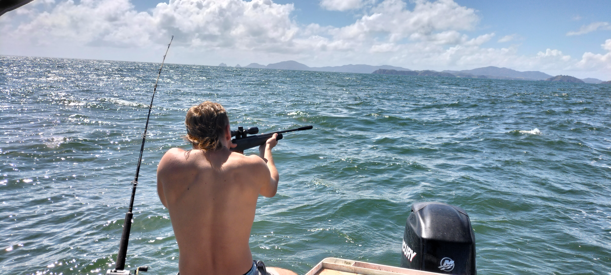
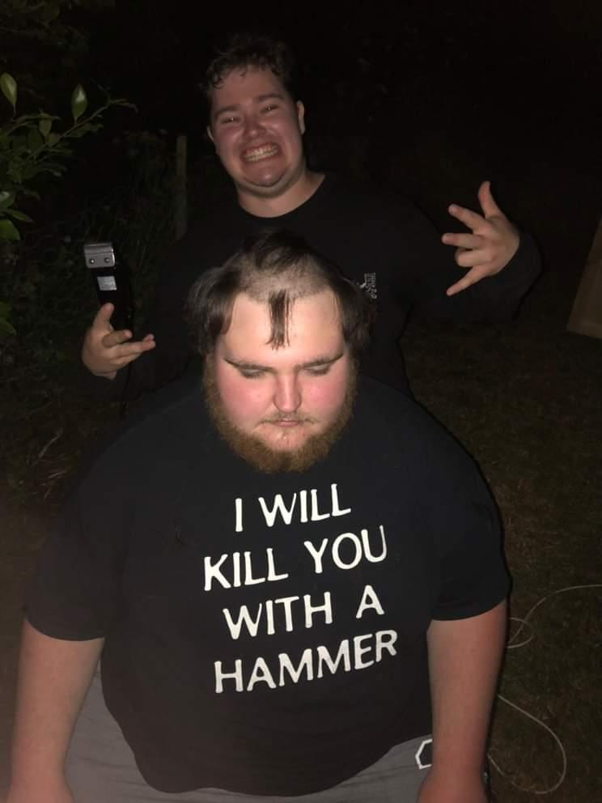

I love getting on the piss and going fishing with the boys.
There’s no better feeling than hooking a massive fish after
slamming beers for the last hour. For me, catching the fish isn’t
even the most important part; it’s all about being out there with
mates, enjoying the moment and the great outdoors. I haven’t had
the best luck with the fish lately, but I know that over the
summer, I’ll be reeling in plenty of big ones.


Not Related to Fishing Just a Funny Image
Speed demons, shitboxes, paddock hacks, Group B rally, and all things speed—anything that meets this instantly grabs my interest.
I’ve owned a few “good” sports cars and quite a few shitboxes, and I’ve enjoyed every moment of them.
When gas prices rise or I just can’t go for a drive in real life, I jump into the world of Dirt Rally 2.0.
It’s a fantastic rally simulator built for tearing up the roads in cars of all ages, from the terrifying Group B cars (my favorites)
to the modern-day monsters. Anything goes in the world of rally. I hope to one day own the cars I drive in these games.